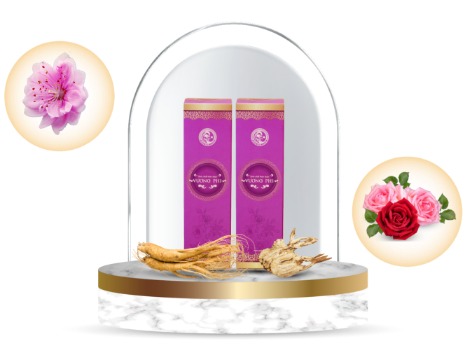
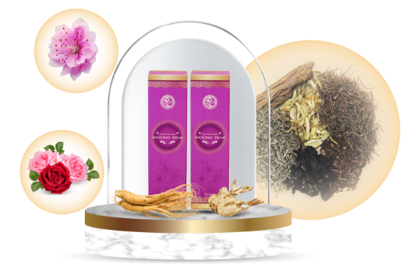

Vấn Đề Của Bạn

- Da có nhiều mảng sậm màu từ nâu nhạt đến nâu đậm
- Kích thước các mảng từ 2 - 4cm
- Có nhiều mảng nám ở gò má 2 bên, trán, cằm
- Vùng da bị nám khô, sần sùi, thâm sạm
Có đến 70% phụ nữ ngoài 30 tuổi bị nám da, đặc biệt là nám mảng, gần 80% các trường hợp chị em xử lý nám
mảng không đúng cách, tiền mất tật mang, nám lên lại sau trị liệu, da bị tổn thương
Theo bạn làm thế nào để cải thiện được nám mảng, có phải chỉ cần da sáng lên, nám mờ là sẽ hết hẳn,
không bị lại?
Bài Thuốc Uống
Thành Phần:
Đào phai thưa cánh, nhân sâm, đông trùng hạ thảo, đương quy, thục địa, diệp hạ châu, hương phụ, mạch môn, bạch thược...
Công Dụng:
Bổ huyết, tăng cường lưu thông máu, cân bằng nội tiết tố, giải độc, tăng tính đàn hồi cho da...

Tinh chất bôi
Thành Phần:
Tinh chất hồng sâm, tinh chất nghệ đen, dịch chiết kim ngân hoa, hoa hồng, nha đam, vitamin E...
Công Dụng:
Làm mờ nám, sáng da, cân bằng sắc tố trên da, se khít lỗ chân lông, cấp ẩm...
Kế thừa tinh hoa bài thuốc dưỡng nhan cung đình
Liệu trình Vương Phi phát triển trên cơ sở bài thuốc dưỡng nhan mà nữ ngự y Trần Kim Thu bào chế sử dụng trong hậu cung (triều Hậu Lê) với công dụng dưỡng nhan, an thần, tăng cường sức khỏe, cải thiện các vấn đề da như nám sạm, tàn nhang, da xỉn màu.
Cơ chế TÁC ĐỘNG KÉP loại bỏ nám mảng từ gốc
Liệu trình Vương Phi xử lý nám mảng với sự kết hợp của bài thuốc uống và tinh chất bôi. Tinh chất bôi làm mờ mảng nám, cải thiện sắc tố da, trong khi đó bài thuốc uống giúp loại bỏ căn nguyên, nuôi dưỡng da từ sâu bên trong
Xử lý nám bên ngoài - Da khỏe từ bên trong
Nguyên lý "trong uống ngoài bôi" giúp nám mảng được loại bỏ từ trong ra ngoài, từ gốc đến ngọn. Vương Phi giải quyết các yếu gây nám, đồng thời làm mờ nám, cân bằng sắc tố da...
Trẻ hóa làn da, làm lành tổn thương
Nguyên lý "trong uống ngoài bôi" giúp nám mảng được loại bỏ từ trong ra ngoài, từ gốc đến ngọn. Vương Phi giải quyết các yếu gây nám, đồng thời làm mờ nám, cân bằng sắc tố da...
KHÔNG xâm lấn
Liệu trình Vương Phi tác động dịu nhẹ lên da, không xâm lấn, không ảnh hưởng đến cấu trúc da, các dưỡng chất quý còn nuôi dưỡng giúp da trắng hồng, khỏe mạnh.
Sử dụng bảng thành phần với hơn 30 thảo dược làm đẹp được phối vị, căn chỉnh phù hợp trong bài thuốc uống và tinh chất bôi, mang đến sự an toàn, lành tính cho làn da.
 Dược liệu sử dụng trong Liệu trình Vương Phi được cung ứng tại hệ thống vườn chuyên canh thuốc nam chuẩn GACP-WHO của Trung tâm Da liễu Đông y Việt Nam (trực thuộc Nhất Nam Y Viện) kết hợp với người dân bản địa các tỉnh: Thái Bình, Thái Nguyên, Hòa Bình, Bắc Kạn,... phát triển. Thảo dược sẽ được kiểm tra kỹ lưỡng từ đầu vào, quy trình nuôi trồng chuẩn, thu hái đúng thời điểm. Sau khi thu hái thảo dược sẽ được sơ chế, nghiên cứu, chiết tách tại nhà máy chuẩn GMP-WHO dưới sự giám sát của đội ngũ chuyên gia giàu kinh nghiệm.